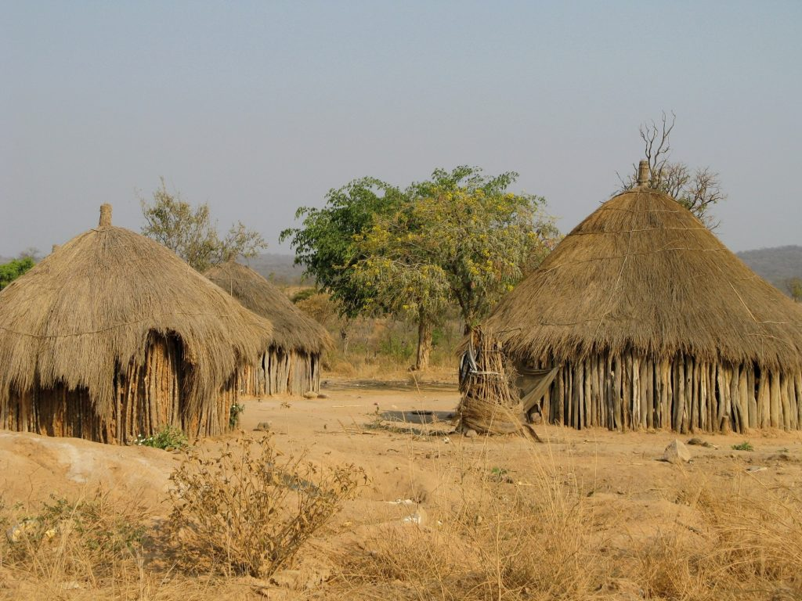
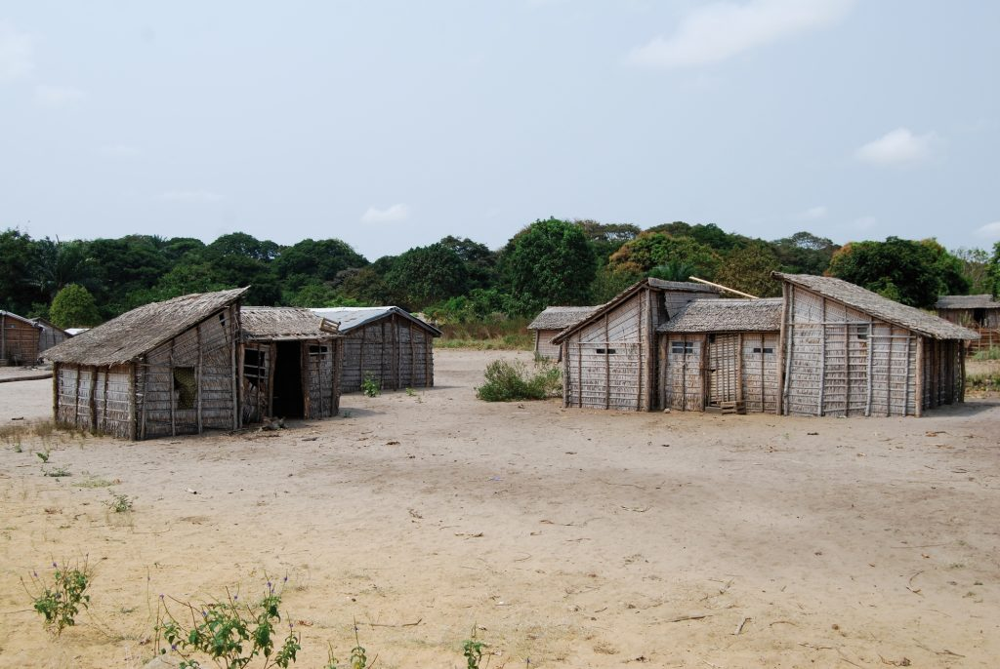
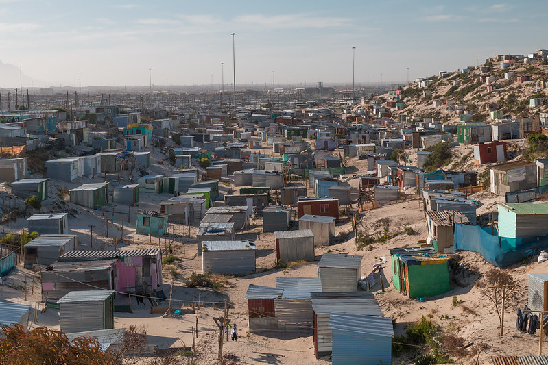
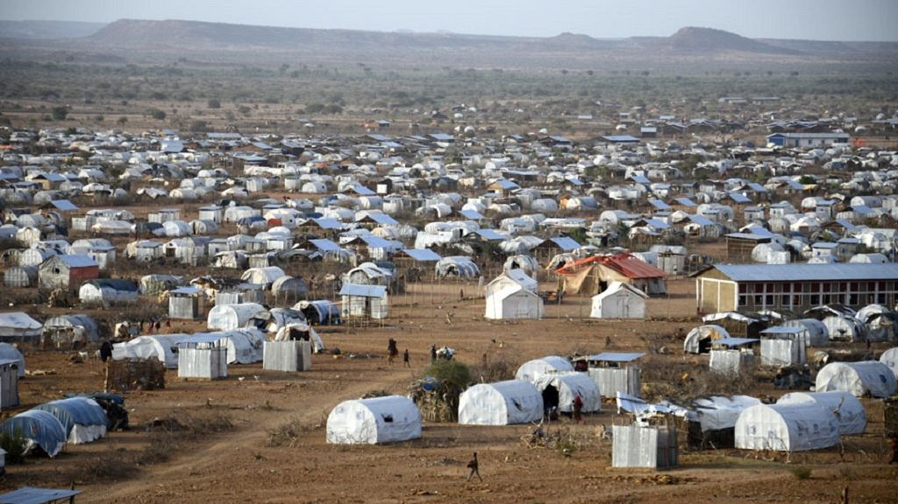
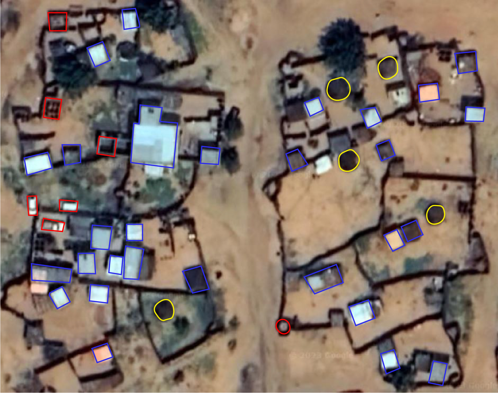

Satellite imagery has paved the way to address natural
hazards and humanitarian crisis more efficiently around the world. Many
organizations, companies, and researchers are enormously exploiting the satellite
data, which has become timely and high resolution with worldwide
coverage. Spatial Services GmbH, located in Salzburg, is also one of the
consulting services that apply satellite and geospatial data for monitoring, analysis
and visualization in projects related to natural environment, climate, and
humanitarian matters cooperating with several agencies and organizations in
different countries.
During the internship, I was involved in humanitarian
projects that were in cooperation with Médecins Sans Frontières (MSF). The
projects were partly related to extract dwellings and refugee camps by means of
machine learning and deep learning models and ended up with manual revision to
minimize the false positives and missed dwellings. The revision was essential due to the objectivity of the dwellings. We faced with several types of dwelling structures that their material (texture), density, and their size made it challenging to extract them through machine learning models. The figure below is an example of the diversity of dwellings, in addition to the false positives (Red color) that were likely to be extracted as dwelling. It is not possible to share the results due to the confidentiality of the outputs.
Images from Architectural Review, Cities Alliance, and Africanews.
The procedure helped to
discover the population number estimation and their distribution to supply
emergency humanitarian services to the local displaced people, and understand the people's movements and population change during conflicts. In addition, the project helped local administration authorities to update the population
density estimation.
Personal Feedback
The experienced I gained during the internship is inevitable. However, due to the increasing number of projects the company is facing with, not much diverse tasks were handed over the interns. Our colleagues were already occupied with numerous tasks and there was no significant room for interns to get more in touch with the ongoing procedures. Also, some mentioned tasks at the interview were not met during the internship. Meanwhile, I am grateful for their attempt and all the communication and interactions to revise and guide my tasks. I left Spatial Services with experiences and memories, a company consisting of great people doing so much effort.




